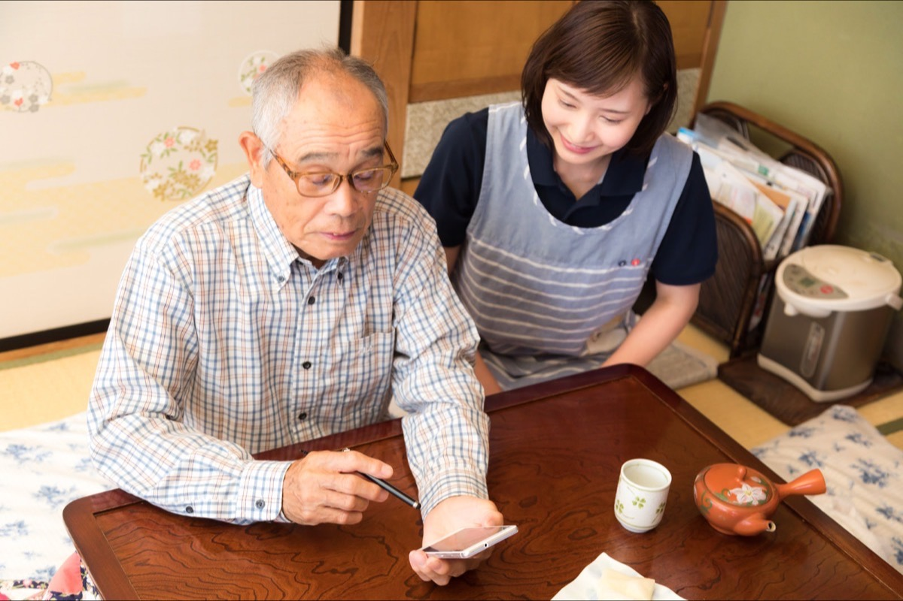

名寄市
名寄市の訪問診療・在宅医療
名寄市とその周辺へ、旭川から医師が伺います。距離があるため、訪問の頻度やオンライン診療の併用を含めてご相談させてください。

名寄市は当院の対応エリアです。ただし旭川市からは道路距離でおよそ80キロメートル、車で片道1時間半前後の距離があります。この現実をふまえて、訪問の頻度とオンライン診療の組み合わせを一緒に設計させてください。
- 区分は対応エリアです。「必ず伺います」というお約束はいたしかねます
- 距離があるため、訪問の間隔は旭川市内と同じにならない場合があります
- 定期訪問の間はオンライン診療と電話でのご相談で補います
- 冬季は暴風雪により日程を変更することがあります
- 下川町・美深町・風連地区は個別にご相談ください
旭川から名寄までの距離という現実
名寄市は、旭川市から北へおよそ80キロメートルの位置にあります。国道40号を使って、車での移動は片道1時間半前後というのが一般的な目安です。往復で3時間、冬季はそれ以上かかります。
この時間は、訪問診療にとって小さな数字ではありません。同じ日に何軒も回る前提で予定を組むため、移動が長い地域は、どうしても訪問できる日が限られます。私たちが名寄市を「中心エリア」ではなく「対応エリア」と表現しているのは、この事情を隠さずにお伝えしたいからです。
一方で、名寄市とその周辺は、通院そのものが難しい方が多い地域でもあります。ご家族が旭川や札幌にお住まいで、日常の付き添いができないというご相談もいただきます。だからこそ、伺える形を一緒に考えたいと思っています。
訪問頻度の考え方
訪問診療の定期訪問は、月2回程度が一般的な目安です。名寄市の場合、この頻度をそのまま当てはめられるとは限りません。訪問の間隔は、次の3点をふまえて決めていきます。
- 病状の安定度：状態が落ち着いていて薬の調整が中心であれば、間隔を広げてオンライン診療で補う形が組めます。逆に変化が起きやすい時期は、間隔を詰める必要があります。
- 医療処置の有無：点滴やカテーテルの管理、褥瘡の処置などがある場合は、訪問看護と役割を分けたうえで頻度を決めます。
- 周囲の支えの体制：ご家族、施設の職員さま、訪問看護ステーション、薬局がどこまで関われるかによって、必要な訪問回数が変わります。
訪問の間隔が広がる場合、その間をどう埋めるかをセットでご説明します。「月に何回来られます」という数字だけでご判断いただくのではなく、体調が変わったときにどう動くかまで含めて決めていただきたいと考えています。
オンライン診療
オンライン診療の併用でできること
距離のある地域では、訪問とオンラインを組み合わせることが現実的な解になります。
オンライン診療とは、スマートフォンやタブレットのビデオ通話を使って、離れた場所から医師が診療を行う仕組みです。厚生労働省の「オンライン診療の適切な実施に関する指針」に沿って実施しています。
名寄市の方の場合、定期訪問の間にオンライン診療を挟むことで、次のようなことができます。
- 顔色や呼吸の様子、むくみの程度を画面越しに確認する
- 血圧や体重の記録を一緒に見ながら、薬の量を調整する
- 次の訪問まで待てる状態か、早めに伺うべきかを判断する
- ご家族が同席し、生活上の困りごとを相談する
操作に不安がある方には、施設の職員さまやご家族、訪問看護のスタッフに同席していただく形をとります。医師が対面での診察が必要と判断した場合は、訪問または受診に切り替えます。詳しくはオンライン診療のページをご覧ください。

冬季（積雪期・路面凍結）の訪問と悪天候時の対応
名寄市を含む道北は、北海道のなかでも冷え込みが厳しい地域です。12月から3月にかけては積雪と路面凍結が続き、暴風雪で視界がきかなくなる日もあります。国道が一時的に通行止めになることもあります。
当院では、冬季について次のような運用をとっています。
- 日程の変更：安全に走行できないと判断した日は、訪問の日程を変更させていただきます。あらかじめお電話でご連絡します。
- 代替の手段：訪問できない日は、オンライン診療や電話での確認に切り替え、状態を把握します。
- 薬の余裕：残りの日数に余裕をもって処方することを基本とし、悪天候で訪問が延びても薬が切れないようにします。
- 連絡の確保：日中に連絡がつく電話番号を、ご本人・ご家族・施設のそれぞれについて確認しておきます。
体調が変わったときは、訪問日でなくてもお電話でご相談いただけます。夜間・休日についても電話でご相談いただけるオンコール体制をとっています。ただし、生命に関わる可能性があると感じた場合は、当院へのご連絡より119番を優先してください。名寄市には救急を受けられる医療機関があり、そちらでの対応が最も早い場合があります。
名寄市内の施設への訪問診療
名寄市内の有料老人ホーム、認知症対応型グループホーム、サービス付き高齢者向け住宅、障がい者支援施設についても、訪問診療のご相談を承ります。施設への訪問は、複数の入居者さまをまとめて診られるため、ご自宅への訪問よりも移動の負担を分散できます。距離のある地域では、この点が現実的な意味を持ちます。
導入は、Phase A 導入準備、Phase B 初回訪問・立ち上げ、Phase C 安定運用の3つに分けて進めます。夜間の連絡フロー、採血の運用、書類の依頼経路も導入時に取り決めます。詳しくは施設への訪問診療導入のページをご覧ください。
名寄市周辺（下川町・美深町・風連地区）のご相談
名寄市に隣接する下川町と美深町、そして名寄市の風連地区についても、個別にご相談を承ります。名寄市中心部との位置関係、冬季の道路状況、地域の医療・介護の体制をふまえて、伺えるかどうかを判断します。
これらの地域は、上川総合振興局管内のなかでも医療機関が限られる地域です。当院で対応が難しい場合も、地域包括支援センターやケアマネジャーを通じた探し方をご案内しますので、まずはご連絡ください。上川管内の他の市町村については上川・道北エリアの訪問診療にまとめています。
まずは対応可否をご相談ください
お電話の際は、訪問先のご住所（地区まで）、現在の病状とかかりつけの医療機関、通院の状況、ご家族や施設の支援体制をお聞かせください。この4点が分かると、対応できるかどうかのご返答が早くなります。
お受けできない場合も、その理由をご説明します。距離だけを理由に一律でお断りすることはしません。まずはご連絡ください。
※ 本ページの内容は一般的な説明であり、個別の診断・治療方針を示すものではありません。移動時間は一般的な目安であり、道路状況により変わります。よくあるご質問
名寄市の方からよくいただくご質問
旭川から名寄まで、実際どのくらい時間がかかりますか？
旭川市から名寄市までは、道路距離でおよそ80キロメートル、車での移動は片道1時間半前後が一般的な目安です。冬季の積雪や路面凍結、暴風雪のときはこれより長くかかります。この移動時間を前提に訪問の計画を立てるため、旭川市内と同じ間隔での訪問が難しい場合があります。訪問の頻度については、病状とあわせて開始前にご相談させてください。
名寄市には必ず来てもらえるのでしょうか？
「必ず伺います」というお約束はいたしかねます。名寄市は当院の対応エリアですが、実際に伺えるかどうかは、ご住所（地区まで）、病状と必要な訪問の間隔、冬季の道路状況、地域の訪問看護ステーションや薬局との連携が組めるかどうかをふまえて、一件ずつ判断します。継続して診られる体制が組めるかどうかが判断の中心です。まずはお電話でご住所と現在の状況をお聞かせください。
訪問の回数が少ない分、体調が変わったときが心配です。
定期訪問の間を、オンライン診療と電話でのご相談、訪問看護との連携で埋める形をとります。オンライン診療では、ご本人の様子を画面越しに確認し、薬の調整や生活上の注意点をお伝えできます。夜間・休日は電話でご相談いただけるオンコール体制をとっています（主治医への直通をお約束するものではありません。緊急時は119番を優先してください）。
冬に道路が閉ざされたら、訪問はどうなりますか？
暴風雪や視界不良で国道の通行が難しい日は、安全を優先して訪問の日程を変更させていただきます。変更が必要な場合はあらかじめお電話でご連絡し、必要に応じてオンライン診療や電話での確認に切り替えます。薬が切れないよう、冬季は残りの日数に余裕をもって処方することを基本としています。
名寄市の周辺、下川町や美深町、風連地区でも相談できますか？
下川町、美深町、名寄市風連地区についても、個別にご相談を承ります。名寄市中心部との位置関係、冬季の道路状況、地域の医療・介護の体制をふまえて判断します。当院で伺うことが難しい場合も、地域で相談できる先の探し方をご案内します。上川管内の他の市町村については、上川・道北エリアのページにまとめています。